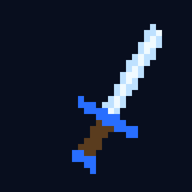
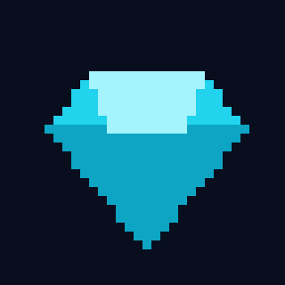
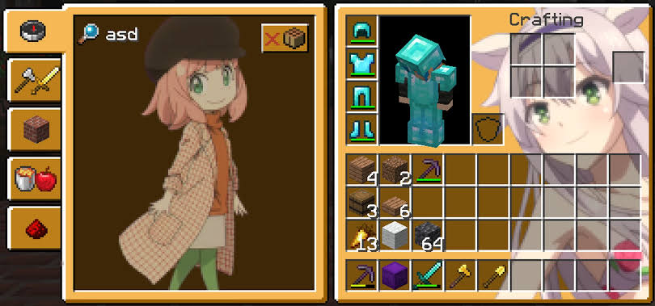
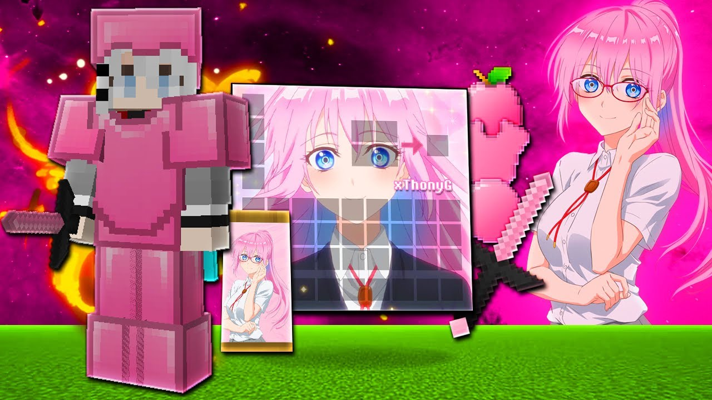
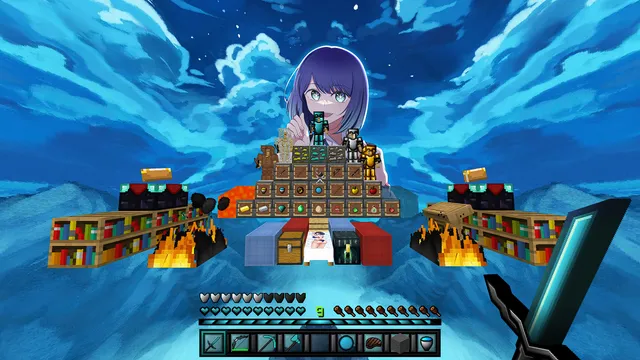
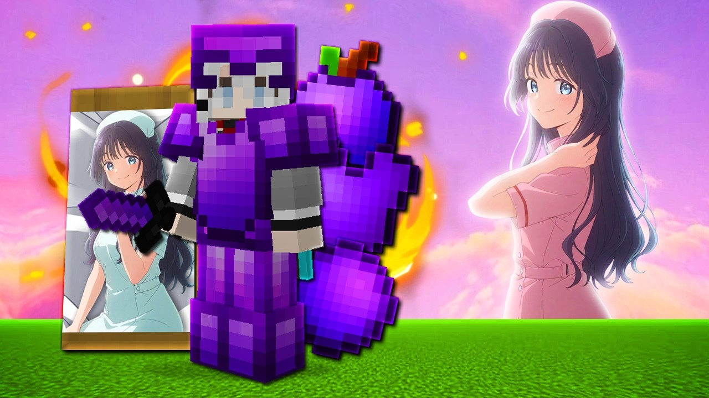

Como funciona o Bedwars
No Bedwars, cada time começa em uma ilha com uma cama. Enquanto a cama existir, os jogadores voltam ao jogo depois de morrer. Quando ela é destruída, quem morrer sai da partida de vez.
Nas ilhas, geradores soltam ferro, ouro e diamante. Com esses recursos você compra blocos, armas, armaduras e melhorias na loja. Vence o último time que continuar vivo.


Como funciona:


GIFs do Giphy e do Tenor, de seus respectivos autores.
Melhores servidores para jogar
- HypixelO maior servidor do mundo e referência em Bedwars. Endereço: mc.hypixel.net. Tem muitos jogadores o dia todo.
- CubeCraftServidor com Bedwars e vários outros minijogos. Endereço: play.cubecraft.net. Tem versão para celular também.
- MushServidor brasileiro, bom para quem quer jogar em português e com ping baixo.
- RedeSkyOutro servidor brasileiro popular, com Bedwars e muitos minijogos.
Confira sempre o endereço atualizado e as regras no site oficial de cada servidor, porque eles podem mudar.
Texturas boas para Bedwars
Você pode jogar com texturas de anime, com cores variadas, de PvP e muito mais. Escolha o estilo que combina com você e personalize a sua experiência no Bedwars.




Dicas para ganhar mais partidas
- Proteja a camaCubra com blocos resistentes, como madeira e pedra, nas camadas de fora.
- Gaste bem os recursosFerro para blocos, ouro para armas e diamante para melhorias.
- Jogue em equipeCombine quem ataca e quem defende. Um jogador sozinho perde mais.
- Treine a ponteSaber andar de ponte rápido faz a diferença nas lutas.
- Olhe o mapaObserve quais camas estão sem proteção antes de atacar.
- Mantenha a calmaPerder faz parte. Aprenda com cada partida.
Quer conhecer o servidor líder?
Acesse o site oficial do Hypixel e veja as regras, novidades e como entrar.